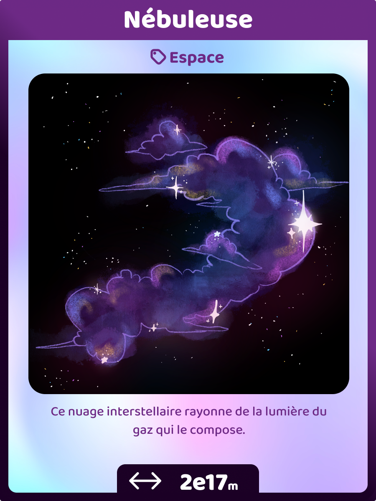
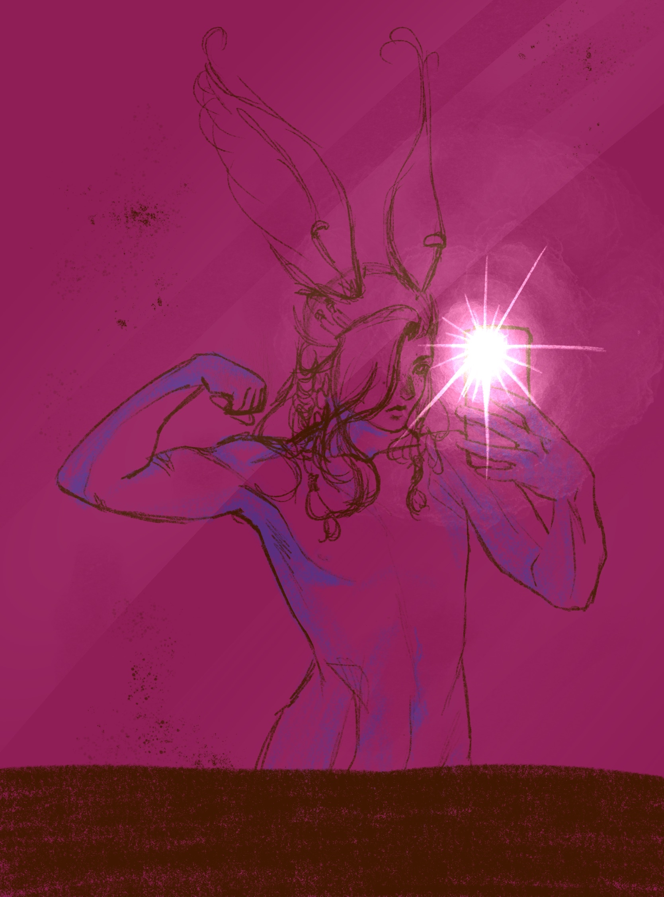
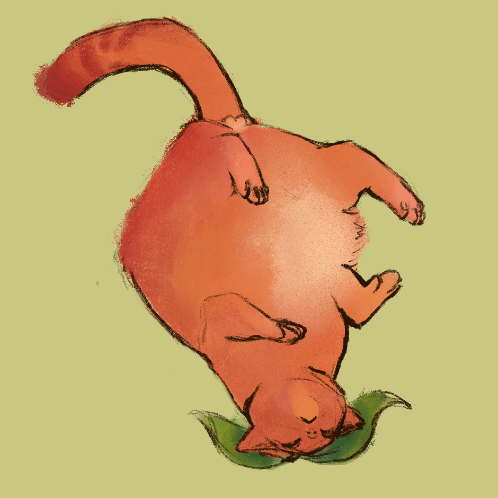

Portfolio
dessins digitaux
fictional character
silly little guys
Tous mes petits dessins (et autres créations) !!! :3
worms on a string....
2025


Moi et mes ptits potes en worms on a string :) j'vous aime fort
Mon personnage de JDR Ars Magica : Lunan

On sent que j'aime les personnages androgynes ou pas????
Étant Bjornaer, il possède un animal de coeur, c'est à dire qu'il peut se transformer en loup à volonté.... c:
C'est un personnage très socially awkward, mais gentil comme tout. Il est déterminé à vivre en harmonie avec la planète, et s'il faut faire couler du sang pour, bon ça le fera chier mais il le fera quand même tention hein!
Si vous êtes dans ma campagne NE LISEZ PAS LA SUITE !!!!!!!!!!!!!!
Ce qui est marrant avec ce boug, c'est qu'il est aussi lycanthrope. je trouvais ça marrant d'avoir littéralement le "j'ai deux loups en moi"
Cartes Nuajeu
Ptits dessins de cartes que j'ai fait pour un jeu créé en cours de programmation. C'était un jeu de collection de cartes, avec différentes rareté comme on peut voir au dessus !
Avec évidemment la nébuleuse qui est la plus rare :) J'en suis super fière honnêtement!!
Mon personnage FF14 : Snoeien
Que j'ai évidemment mal écrit in game et qui est bloqué sur 'Soeien' (qui veut dire sucer... nickel) jusqu'à ce que je daigne payer 7€ pour le changer ;-; et je m'en suis rendue compte au niveau QUARANTE DEUX, jai passé genre 30h de jeu sans m'en rendre compte??? câbler)
Chat pêche
Chat pêche... à mediter...
Frieren en crochet

Frieren que j'ai fait en crochet pour le secret santa de l'année 2025 :)
Je n'avais pas touché au crochet depuis longtemps avant celui là. J'ai vraiment du mal avec les peluches en plus, il faut être vraiment précis sur le nombre de mailles que tu fais, et je sais à peine compter donc dur. Un projet comme un chapeau ou autre ça se freestyle plus facilement.